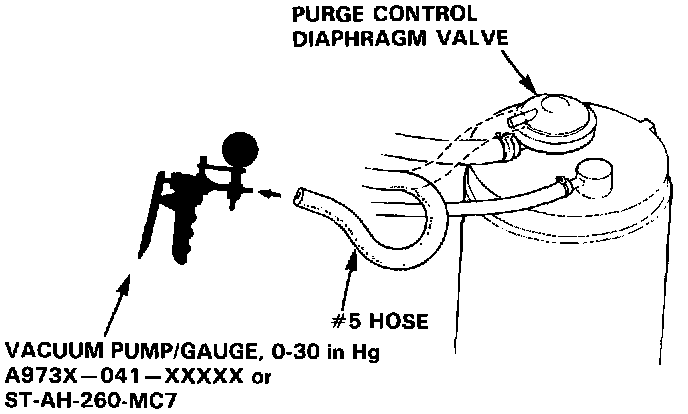
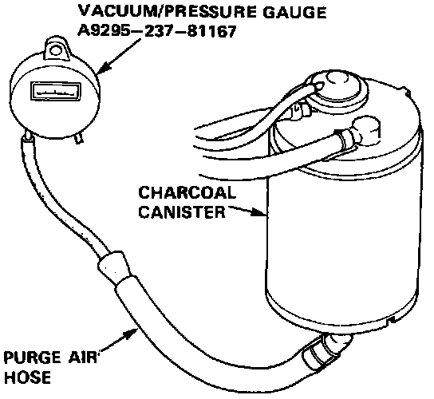
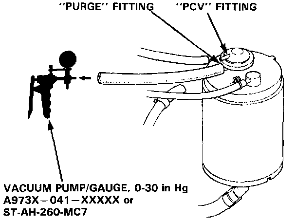

Coupe
HOT ENGINE
1. Disconnect the #5 hose at the purge control diaphragm valve (on the charcoal canister) and connect a vacuum gauge to the hose.
2. Warm up the engine to normal operating temperature (cooling fan comes on).
There should be vacuum at idle, once the engine is warm.
- If there is no vacuum, replace the thermovalve and retest.
3. Disconnect vacuum gauge and reconnect the hose.
4. Remove fuel filler cap.

5. Remove canister purge air hose from frame and connect hose to vacuum gauge as shown.
6. Raise engine speed to 3,500 rpm.
Vacuum should appear on gauge within 1 minute.
- If vacuum appears on gauge in 1 minute, remove gauge, test is complete.
- If no vacuum, disconnect vacuum gauge and reinstall fuel filler cap.
7. Remove charcoal canister and check for signs of damage or defects.
- If defective, replace canister.

8. Stop engine. Disconnect upper vacuum hose from canister "PCV" fitting.
Connect a vacuum pump to canister "purge" fitting as shown, and apply vacuum.
Vacuum should remain steady.
- If vacuum drops, replace canister and retest.
9. Restart engine. Reconnect hose to canister "PCV" fitting.
"PURGE" side vacuum should drop to zero.
- If "PURGE" side vacuum does not drop to zero, replace the canister and retest.